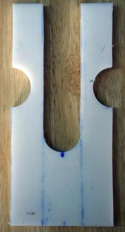

| Strongback - Stations | Menu Previous Page Next Page | |
|
Station after holes are drilled.
|
Cutting Out Stations - Use a jigsaw with a fine tooth blade to cut out the stations. Use standard wood or plastic cutting blades. Clamps hold the section of 1/2" HDPE in place.
|

Completed station ready for attachment to 2x4 base. |